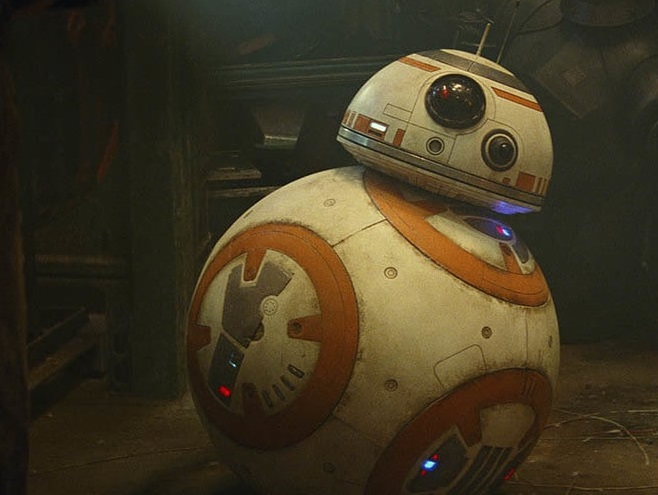

Avec son systeme de déplacement gyro-magnétique,
les mouvement du droïde sont facilités sur tous
les terrains. Le sphero-corps GyrOB-X2 offre
une puissance et une accélération incroyables
pouvant aller jusqu'a 42km/h.

L'acolyte idéal !
Avec ses 600+ protocoles émotionnels BB-8 saura d'adapter à tous ses interlocuteurs ainsi qu'a toutes les situations qu'il rencontre.
Format réduit
Ne vous fiez pas à sa petite taille, malgrès le fait que BB-8 soit 2 fois plus petit que ses prédécesseurs, il est autant de fois plus efficace sur le terrain !